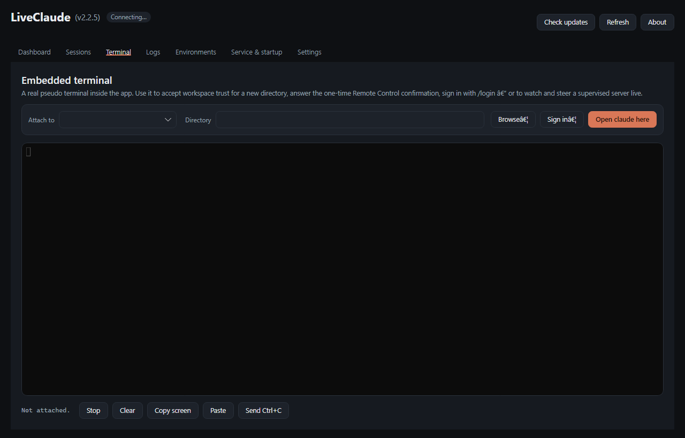

LiveClaude keeps Remote Control and worker agent sessions running on Windows, Linux, and macOS — supporting Claude Code, Cursor My Machines, and Antigravity, restarted automatically across crashes, sign-ins, and reboots.

Remote Control is a foreground process in a terminal: close the window, hit a crash or reboot the machine and your phone loses the machine. LiveClaude turns it into infrastructure.
Exponential backoff after a crash, a restart budget you choose, and automatic reattachment to the previous session when it is still inside Remote Control's four-hour window.
A scheduled task, a systemd user unit or a LaunchAgent runs in your own session and survives sign-in and boot. A Windows service, a systemd system unit or a LaunchDaemon starts before anyone signs in. All of them are installed, started and removed from the app.
Spawn mode, permission mode, capacity, worktrees, session-name prefix, fixed session id, sandbox, model, extra arguments — with a live preview of the exact command line.
Workspace trust, the one-time Remote Control confirmation and /login all need a terminal.
There is one in the app — and you can attach to a running server and type into it.
Running, starting, needs attention, backing off, failed. Session URLs one click away, rolling per-instance logs, and a supervisor log for the host itself.
.NET 10 and WPF. ConPTY and the VT emulator are written from scratch — no Node, no web view, no tmux, no native dependencies beyond Win32.

Each product runs as an isolated plugin assembly. Pick a product per session and configure its CLI path in Settings → Products.
claude remote-controlSupports same-dir, worktree, and session spawn modes, permission modes, capacity limits, bridge environment cleanup, and automatic --continue reattachment.
agent worker startSupervises Cursor My Machines workers with multi-directory routing (--worker-dir), API key or token file authentication, and automatic Windows better-sqlite3 ABI patching.
agy --remote-controlRuns Google Antigravity CLI in foreground Remote Control mode with configurable execution mode, reasoning effort, model override, agent, project, sandbox, and conversation resume.
Windows 10 1809+, Linux with systemd, or macOS 12+.
Download LiveClaude-<version>-x64.msi from the
latest release and run it.
Installs self-contained to Program Files\LiveClaude, preserves your configuration across upgrades,
stops/restarts the Windows service cleanly if registered, and enables one-click in-app auto-updates.
To skip the anonymous installation counter during silent deployment: msiexec /i LiveClaude.msi INSTALLCOUNTER=0.
winget install LeandroCannizzaro.LiveClaude
Installs both liveclaude (the app) and liveclaude-service (the supervisor CLI).
# after extracting the zip
./Install-LiveClaude.ps1 -RegisterTask -Launch
The script copies the files to %LOCALAPPDATA%\Programs\LiveClaude, creates a Start Menu
shortcut and registers the supervisor task. No administrator rights needed. Pick the
-selfcontained zip to skip the .NET runtime prerequisite.
Installs for the current user and checks for updates on every launch.
Your browser will download LiveClaude.application; open it to install. Requires the
.NET 10 Runtime. The manifests are
unsigned, so SmartScreen asks for a confirmation the first time.
Still on 1.x? That channel is frozen at 1.0.15 and keeps working — 2.0 is a separate install, not an update, because it is a different application underneath. Install it alongside and remove 1.x when you are happy.
curl -fsSL https://leandrocannizzaro.github.io/LiveClaude/install.sh | sh
Picks the .deb, .rpm or tarball for your machine, installs it to
/opt/liveclaude and puts liveclaude and
liveclaude-supervisor on your PATH. x86_64 and arm64. Self-contained — no .NET
runtime needed.
Autostart is a systemd user unit, installed from the app or with
liveclaude-supervisor install-autostart. Starting before you sign in additionally
needs loginctl enable-linger, which the app offers to do for you.
curl -fsSL https://leandrocannizzaro.github.io/LiveClaude/install-macos.sh | sh
Downloads the .dmg for your Mac, copies the app to /Applications and
clears the quarantine flag. Apple silicon and Intel. Self-contained.
Installing the .dmg by hand works too — but the app is not notarised
yet, so macOS refuses the first launch: right-click the app and choose Open,
once. The script exists to spare you that.
Autostart is a LaunchAgent. A LaunchDaemon can start before sign-in, but the login Keychain — where Claude Code keeps its token — stays locked until somebody signs in.
git clone https://github.com/LeandroCannizzaro/LiveClaude.git cd LiveClaude dotnet build -c Release dotnet run --project src/LiveClaude.App
The supervisor owns one foreground CLI process per configured session, each inside its own pseudo terminal. The desktop app connects over a named pipe on Windows and a Unix socket elsewhere, so you can close the window and your sessions keep running.
| Area | How to use it |
|---|---|
| Sessions | Use the top toolbar (New session, Save session, Trust this directory…, Run once in terminal…, Delete) and the three tabs (General & Product, Product Options, Command Preview) without scrolling. |
| Service & startup | Choose between the User session host (Scheduled Task / systemd user / LaunchAgent — recommended) and the System-wide host (Windows Service / systemd system / LaunchDaemon). |
| Settings & Themes | Configure supervisor intervals, backoff policy, config/log folders, per-product CLI paths, and UI themes. Pick a built-in preset (Default Dark, Light, Midnight Blue, Forest Dark, High Contrast) or customize any color live with the built-in Color Picker. |
| Auto-Update | When a new version is published, an Update to vX.Y.Z button appears in the top-right header. LiveClaude verifies the SHA-256 checksum, applies the update for your platform (Windows MSI/ZIP, Linux .tar.gz, or macOS .dmg), and restarts automatically. |
Anonymous installation counter. At the end of a successful first-time setup (MSI or portable ZIP),
the installer requests a single SVG image from hits.sh without opening a window. It sends no machine names,
accounts, tokens, or personal data (only the standard HTTPS network connection). Uninstalls, repairs, and normal app launches
never ping the counter. You can opt out with INSTALLCOUNTER=0 (MSI) or -NoInstallCounter (install.ps1).